You can and need to talk to other characters to get help and to find out about quests to complete.
There are two kind of characerers:
All of the NPCs reply to Hi (most of them reply also to Hello and Hola), so greet them and ask them for help, their offer, or quests.
Some of them will sell and buy sheep or items, others heal you, and others are simply "useless"
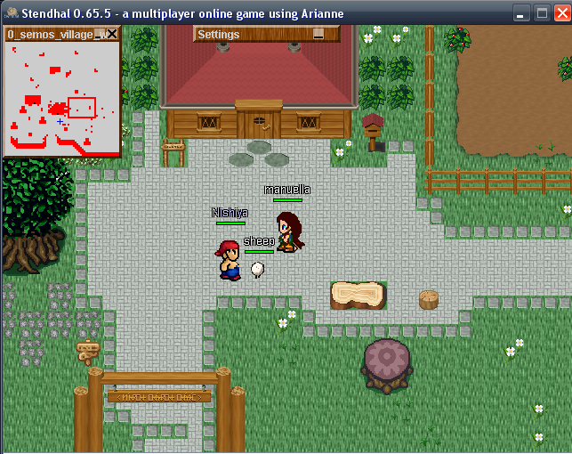
An example of a conversation with Xin Blanca could be:
<miguel> hi <Xin Blanca> Greetings! How may I help you? <miguel> help <Xin Blanca> I buy and sell several items, ask me for my offer <miguel> offer <Xin Blanca> Please look at the blackboards on the wall to see what I buy and sell. <miguel> buy leather_legs <Xin Blanca> leather_legs costs 30. Do you want to buy? <miguel> yes <Xin Blanca> Congratulations! Here is your leather_legs! <miguel> Bye <Xin Blanca> Bye.
Sometimes you can buy more than one item at the same time:
<miguel> buy 10 minor_potion
Notice that names of items doesn't contain spaces between words (they use _ as separator) and the name of the item is always singular independently of the amount being bought.
You can also get more than one item produced at once:
<miguel> mill 10 flour <Jenny> I can only mill 10 flour if you bring me 50 grain.
Some NPCs like to talk to you. If they say something in blue you can repeat it to get further information.
<Tad> I have a task for you. <miguel> task <Tad> I need you to get a flask from Margaret
Items such as armour and weapons can be found in the Stendhal world, or bought for hard earned cash. (Hint: Explore the tavern, I've heard a shady character goes there to sell his stuff... though it might be stolen!)
Items increase your Attack or Defence values accordingly. They must be equipped by dragging them onto a particular section of the player in the Top right GUI. This little representation of your player allows you to visualise what they are wearing/using.
Explore it! :)
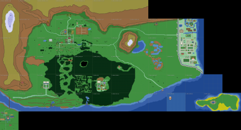
This map represent current status of the Stendhal World. It only shows the ground level to avoid spoiling interesting dungeons. Some areas in the south east are only on our cvs right now but still created.
Read more at StendhalAtlas
Once you have bought a sheep it will follow you wherever you go. It's your job to protect and feed it.
The icon shown in the upper-right corner of the sheep will show you what it is thinking.
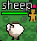
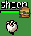
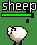
Sheep like to eat fruits. These fruits can be found on the many bushes in Stendhal. A bush can carry up to five fruits. Over time these will grow back. So if your sheep has eaten all of it, it's time to move to the next bush.
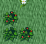
Right Click on your sheep and choose Look to see how fat it has become. The fatter the sheep, the more you will get for it when you sell it.
Sheeps aren't very intelligent. So if your sheep gets stuck or isn't near you just write sheep and it will start moving to your position. You can verify the sheep's position by writing /where sheep.
Unfortunately once you own a sheep you can't leave the zone without your sheep being near you. So make sure it is near before trying to leave. If you are in a hurry you can leave your sheep. To leave your sheep right click on yourself and choose leave sheep.
Sometimes sheep are silly and they trap you. If this happens, then leave your sheep. He'll walk away then when you're free you can own him again.
You can also own a released wild sheep again by right clicking on it and choosing own.
Outfit helps you to feel the real role playing experience.
You can choose your outfit by mixing a set of different styles of bodies, heads, hairs and clothes.
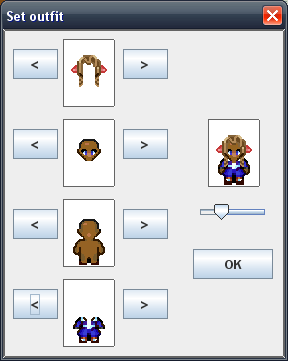
To bring up the dialog Right Click your character and choose Set Outfit. Click OK when you are done.
You can also choose not to wear clothes at all :)
If you just close the window nothing will be changed.
Combat is an important way of increasing your level. You only get experience by killing. You can't improve your skills by training like in other games.
When a creature is attacking you, it has a yellow square round it and you have a red square around you.
To attack a creature simply right click on it and choose Attack or double-click it. You will see that a red box appears almost immediately around it. This indicates an attack is being carried out. You need to be next to the target in order to actually hit them though!
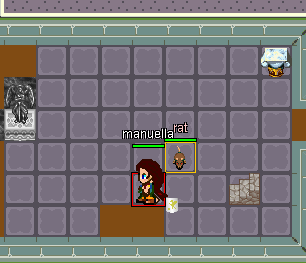
Your attack will continue until:
Combat is round based, and each round last around 1.6 seconds. Each round the attack is resolved and the result is displayed in the right-bottom corner of the target:
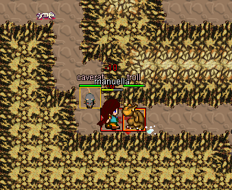
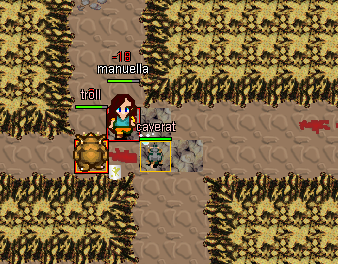
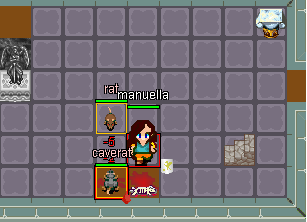
If you kill your target you will see a blue number pop out which is the experience reward you have gained.
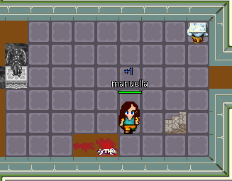
Once you have killed your target it is important that you
inspect its corpse to find money, food and other items: move next to
the corpse and right click on it and choose inspect (you can also double-click to inspect). You can identify any kind of item you find at any time by right clicking on it and choosing look.
To store items in your bag you can move them there by drag and drop or simply double-click them.
Your character has a level attribute that expresses how strong that character is.
Levels are the only way of comparing your character against others.
With each kill or quest completed you are rewarded experience points (XP). If you get enough XP you will level up.
To see how much experience is needed to change level, checkout the Level Progression Tables.
{kind=link}
{kind=link}
{kind=link}